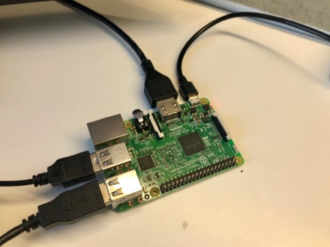

EQUIPMENT
INSTRUCTIONS
1. Plug the HDMI cable from the monitor to the Raspberry Pi.
2. Connect the USB keyboard. Then the USB controller.
3. Insert the micro SD card into the Raspberry Pi (after installing RetroPie using the guide page for help).
4. Use the micro USB wire for power, ideally from a 12W power supply. E.g. From an iPad plug.
| HARDWARE | SOFTWARE |
|---|---|
| Raspberry Pi 3 | RetroPie |
| USB controller | Win32DiskImager |
| Micro USB power supply | Etcher |
| At least 8GB SD card | |
| Monitor with HDMI cable | |
| Computer for set up | |
| USB keyboard for set up | |
| USB memory stick |
RASPBERRY PI CASE
Before inserting the wires or SD card, put the Raspberry Pi into its case if you have one. Do this by carefully placing it into base, then clip on the top. After this, just clip on the sides. The case will protect the Raspberry Pi so it is advised to use one.